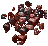

Commodity Deed[商品引換証]
１．使い方
（１）commodity deedにアイテムを登録する
- commodity deed
 を、銀行、大型船の船倉またはcommodity deed box[商品引換ボックス]（長期報奨1年）
を、銀行、大型船の船倉またはcommodity deed box[商品引換ボックス]（長期報奨1年） の1層目に置きます。
の1層目に置きます。
- commodity deedをダブルクリックし、登録したいアイテムをターゲットに指定します。
- 適用できるアイテムであれば、commodity deedにアイテムが登録されます。
（２）commodity deedからアイテムを取り出す
- アイテムが登録されたcommodity deedを、銀行、大型船の船倉またはcommodity deed boxの1層目に置きます。
- commodity deedをダブルクリックします。
- commodity deedが登録されていたアイテムに変わります。
２．適用可能なアイテム
スタックするアイテムは、一部を除きcommodity deedに登録できるようになりました。
現時点で登録できないスタックアイテムは以下のものです。
-  ore [鉱石] 全形状
 plant clippings [植物片]
plant clippings [植物片] dry reeds [植物の茎]
dry reeds [植物の茎] plant pigment [植物顔料]
plant pigment [植物顔料]